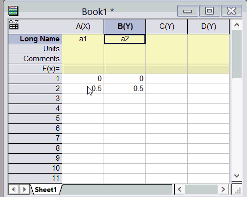

FAQ-499 Wie fülle ich Zellen automatisch mit Daten?
AutoFill-Cells
Letztes Update: 27.06.2022
Klicken Sie einmal auf eine Zelle oder Gruppe von Zellen und beachten Sie das schwarze Quadrat in der unteren rechten Ecke des Auswahlfelds. Bewegen Sie die Maus über das schwarze Quadrat, bis Ihnen ein Kreuz (+) angezeigt wird. Ziehen Sie diese Auswahl dann nach rechts und/oder nach unten, um die zusätzlichen Zellen automatisch mit Daten zu füllen.
Das automatische Füllen verwendet das erste Inkrement, das im ausgewählten Bereich gefunden wird (vertikale bzw. horizontale Bereiche haben möglicherweise unterschiedliche Inkremente), um den neuen Bereich zu füllen. Wenn Sie die Strg-Taste drücken, während Sie ziehen, werden die Werte, die Sie ausgewählt haben, immer wieder wiederholt.
- 
Hinweis: Durch einen Doppelklick auf die winzige Ecke wird die Spalte so gefüllt, dass sie die gleiche Länge hat wie die linke Spalte.
 |
Sie können eine Gruppe von Zellen vorauswählen, eine Zahl oder einen Text in die aktive Zelle eingeben und dann die Tasten Strg + Enter drücken, um die ausgewählten Zellen mit einer gemeinsamen Eingabe zu füllen. Nicht zusammenhängende Auswahlen werden unterstützt. Für Versionen vor 2021 (9.8) verwenden Sie Alt + Enter.
|
Siehe auch: FAQ-1144 Wie fülle ich meine Zeilen bzw. Spalten automatisch mit Daten?
Schlüsselwörter:automatisches Füllen, Zelle, Arbeitsblatt, Zellenwert, Daten wiederholen